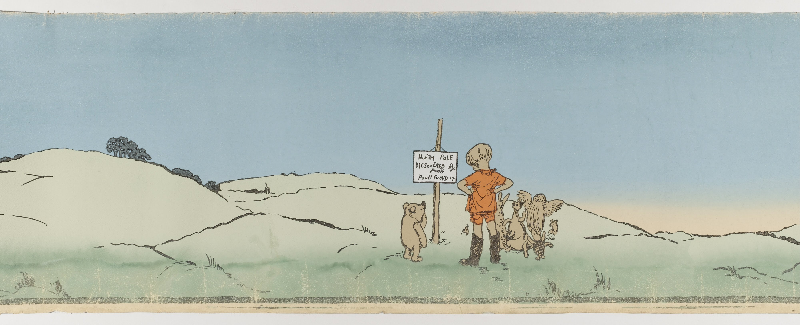
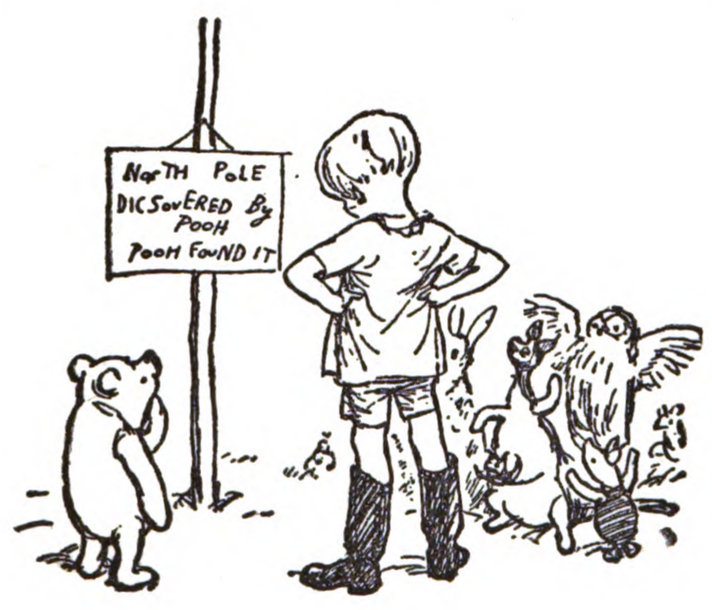
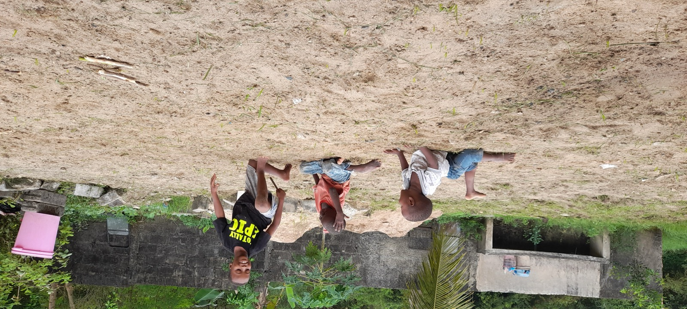

Скука как ресурс: почему лучшее, что можно дать ребёнку этим летом, это ничего
В первые дни каникул в каждой семье звучит одна и та же фраза: «Мне скучно». Иногда от ребёнка, иногда от взрослого, который смотрит на ребёнка и тревожится. Современная родительская культура устроена так, что эта фраза воспринимается как сигнал тревоги: надо что-то предпринять, придумать активность, записать на кружок, включить мультик, пойти куда-то. В английском есть отдельный глагол entertain, развлекать, и в последние двадцать лет он стал главным родительским действием. Мы научились entertain ребёнка с двух лет и до взрослой жизни. И обнаружили, что выросло поколение, которое не умеет занимать себя само.
Этот выпуск про то, чтобы остановиться. У мировых исследователей детской скуки последние тридцать лет один и тот же вывод: скука это не пустота, которую надо заполнить. Это работа мозга, во время которой включается воображение. Из скуки рождается замысел, самостоятельная игра, идея, открытие. А привычное родительское «дай я тебе сейчас что-нибудь покажу» эту работу останавливает.
И что главное: первые недели каникул это лучшее окно в году для того, чтобы дать ребёнку соскучиться. Не отнять, не запретить, не запланировать. Дать соскучиться.
Что внутри
📚 Винни-Пухкак детская скука стала книгой
💬 Вопросчто ты делаешь, когда тебе скучно
🧠 НаукаМанн, Кадман и Тереза Белтон
🌸 Японское «ма»пустота, без которой не понять Миядзаки
🌳 Двенадцать игрсценарии, которые рождаются из скуки
👀 Тоторофильм, в котором ничего не происходит
🎧 ПодкастыBored and Brilliant и «Гусьгусь»
📦 Коробка скукиодна простая вещь в каждый дом
🧺 Задание30 минут полной скуки
📚 Книжка-пятиминутка
Винни-Пух родился из детской скуки, и это не метафора
3–8 лет10 минут на главу, читается весь сезон

У большинства великих детских книг XX века одна и та же история: они были придуманы взрослыми для конкретного скучающего ребёнка. Об этом редко говорят на уроках литературы, и зря. Это лучший аргумент в пользу скуки, который можно дать самому себе в первые дни каникул.
В 1925 году английский журнал «Evening News» заказал писателю Алану Александру Милну рождественский рассказ. У Милна был пятилетний сын, Кристофер Робин, и у Кристофера Робина был плюшевый медведь. Сначала медведя звали Эдвард, потом Кристофер увидел в Лондонском зоопарке медведицу по имени Виннипег (её привезли в зоопарк канадские военные ещё в Первую мировую), и медведь стал Винни. К имени добавилось Пух, так звали лебедя, которого Кристофер с отцом видели на пруду.
В рассказе для «Evening News» Винни-Пух впервые появился в литературе 24 декабря 1925 года. Через год, 14 октября 1926-го, Милн собрал истории про сына, его игрушки и придуманные приключения в книгу «Winnie-the-Pooh». До конца года она разошлась тиражом 150 000 экземпляров. Иллюстратор Эрнест Шепард рисовал персонажей с настоящих игрушек Кристофера, и эти рисунки до сих пор остаются эталоном для всех изданий.
Но самое важное в этой истории не успех. Самое важное это что породило книгу. Маленькому Кристоферу Робину было скучно. Он был единственным ребёнком в семье, гулял один по окрестному лесу, играл со своими плюшевыми. И его отец, который вообще-то был драматургом и эссеистом, а не детским писателем, начал придумывать ему истории, чтобы заполнить эту его скуку. Сами истории родились из медленного, бессобытийного, скучного по современным меркам детства одного английского мальчика в 1920-х годах. Из скуки одного ребёнка получилась книга, которую потом сто лет читали миллиарды детей.
Это иллюстрация к главной идее этого выпуска. Не «скучающий ребёнок это упущенная возможность развития». А «скучающий ребёнок это потенциальный Винни-Пух».
Если в доме есть «Винни-Пух» в пересказе Бориса Заходера, лучшая русская версия, потому что Заходер не переводил, а пересказал, и это одна из лучших русских детских книг XX века с английским сюжетом. Главы короткие, читаются по одной перед сном. На все летние каникулы хватит обеих частей («Винни-Пух и все-все-все» и «Дом на Пуховой опушке»).
💬 Повод поговорить
«Что ты делаешь, когда тебе скучно», вопрос, который многие родители боятся задать
4–12 лет10–20 минут, лучше за чаем
Этот вопрос редко задают напрямую. Обычно его подменяют другим: «тебе скучно?», с подспудной мыслью «и я сейчас придумаю, чем тебя занять». А правильно задать его иначе. Не как тревогу, а как любопытство. Что именно ты делаешь, когда тебе скучно. Куда уходит твоя голова. О чём ты думаешь, когда никто тебя не развлекает.
И слушать. Не вмешиваться. Не предлагать. Дать ребёнку самому сформулировать.
Что отвечают дети (и что эти ответы означают):
- «Я смотрю в окно». Это хорошо. Окно, один из главных каналов воображения в любом возрасте. Ребёнок смотрит на улицу не «бессмысленно», у него в это время идёт работа.
- «Я думаю». Это тоже хорошо, и стоит спросить «о чём». Не для контроля. Ради интереса. Часто узнаёте о ребёнке такое, чего не узнали бы за неделю «организованного общения».
- «Я ничего не делаю». Это лучший ответ. Дети, которые умеют просто «ничего не делать», в подростковом возрасте оказываются устойчивее к стрессу. Это уже подтверждено исследованиями.
- «Мне страшно скучно, я не знаю, что делать». Это тоже нормально, особенно у детей, которые привыкли к плотному расписанию. Скуке надо учиться, и первые её эпизоды могут переноситься тяжело. В этом случае не бросаться развлекать, а сказать «давай минут двадцать ничего не будем делать, посмотрим, что получится».
- «Я беру телефон». Это сигнал. Не повод для скандала, повод для разговора о том, что телефон отменяет скуку, а вместе с ней и всё хорошее, что из скуки могло бы получиться. С детьми 9+ об этом можно говорить прямо.
Для 4–6 лет.
- А что было самое интересное, что ты когда-нибудь придумал, когда тебе было нечем заняться?
- Если бы у тебя был час, в котором нет ни мультиков, ни игрушек, ни взрослых рядом, что бы ты делал?
- А может ребёнок придумать игру сам, или игре обязательно учит взрослый?
Для 7–10 лет.
- Когда ты в последний раз что-то изобрёл? Что это было?
- Если ты долго ничего не делаешь, тебе становится страшно или интересно?
- Какое твоё любимое место, чтобы просто посидеть?
🧠 Полезное
Что говорит наука: эксперимент 2014 года, который изменил разговор о скуке
взрослым5 минут
В 2013 году британский психолог Сэнди Манн из Университета Центрального Ланкашира и её студентка Ребекка Кадман провели простой эксперимент. Сорок взрослых участников разделили на две группы. Первой дали скучное задание: пятнадцать минут переписывать номера из телефонной книги. Вторая группа сидела без задания. После этого обеим группам дали один тест на креативность: придумать как можно больше разных применений для двух пластиковых стаканчиков.
Результат был ясный и измеримый. Группа, которая до этого пятнадцать минут переписывала телефонные номера, придумала значимо больше оригинальных применений. Не просто «стакан для воды» и «стакан для карандашей», а «серьги», «музыкальные инструменты», «мини-цветочные горшки». Их мозг, скучая, ушёл в режим блуждания, и в этом режиме нашёл связи, которых не находил мозг, который скучать не успел.
В 2014 году исследовательницы опубликовали работу в журнале Creativity Research Journal под названием «Does Being Bored Make Us More Creative?» (Делает ли скука нас более творческими?). Через год они провели второй эксперимент. На этот раз в скучной группе люди не переписывали, а просто читали номера из телефонной книги вслух. Ещё более пассивная задача. Результат оказался ещё сильнее: эта группа показала самую высокую креативность из всех. Чем пассивнее скука, тем сильнее эффект.
🔗 ScienceDailyподробный разбор обоих экспериментов, январь 2013 года
🔗 The Conversationполная статья Терезы Белтон
Тереза Белтон, старший научный сотрудник Школы образования и непрерывного обучения Университета Восточной Англии (University of East Anglia), занимается изучением детской скуки и воображения уже более тридцати лет. В 2016 году она опубликовала программную статью в журнале The Conversation под названием «How kids can benefit from boredom» (Чем полезна детям скука).
Её главный вывод сформулирован просто: «Скука критически важна для развития внутреннего стимула, который и есть основа подлинного творчества». Когда у ребёнка нет внешнего раздражителя, его мозг вынужден производить раздражитель сам. Это и есть момент рождения воображения.
Особенно важная мысль Белтон: «Если родители стремятся постоянно занимать ребёнка, они невольно подавляют развитие его воображения». Постоянная стимуляция работает как глушитель. Чтобы фантазия развивалась, ей нужны паузы.
Главный сдвиг, который стоит сделать в эти первые недели каникул, это перестать чувствовать вину за то, что ребёнку нечем заняться. «Ему нечем заняться» это не дефицит. Это та самая пауза, в которой работает его внутренний мир. И задача взрослого не заполнять её, а защищать. Не предлагать активности. Не звать к экрану. Не «давай я тебе сейчас что-нибудь». А просто оставить.
Через десять, пятнадцать, тридцать минут ребёнок что-то придумает сам. Возможно не сразу. Возможно через несколько подходов в течение недели. Но это будет именно его придумка, а не наша. И это качественно другой опыт, и для него, и для родителя.
🌍 Полезное
Японская «ма»: концепция пустоты, без которой не понять Миядзаки
взрослым4 минуты
В японской эстетике, философии и дизайне есть понятие, которое плохо переводится на русский. Слово «ма» (間) означает «пустоту между». Пауза между нотами в музыке. Пробел между предметами в комнате. Тишина в разговоре. Несделанное движение в танце. По японским представлениям, без «ма» не существует ни музыки, ни дизайна, ни разговора. «Ма» это то, что даёт всему остальному смысл.
Это прямая параллель к нашему разговору о скуке. Скука это «ма» детства. Пауза, без которой не складываются остальные впечатления.
Хаяо Миядзаки, режиссёр студии Ghibli, в 2002 году дал большое интервью американскому критику Роджеру Эберту. В нём он объяснил, почему его фильмы устроены не так, как голливудские мультфильмы. В голливудском мультфильме нет пустых моментов: каждые тридцать секунд должно что-то происходить, иначе зритель заскучает. В фильмах Миядзаки есть длинные сцены, в которых ничего не происходит. Девочка едет в поезде и смотрит в окно. Тоторо сидит под деревом и ждёт дождя. Кики идёт по улице незнакомого города.
Эти сцены и есть «ма». Миядзаки использовал в интервью жест: хлопнул в ладоши и сказал, что время между хлопками это и есть «ма». Без «ма» зритель не успевает почувствовать предыдущее впечатление, и оно проходит мимо. А когда «ма» есть, оно укладывается и становится опытом.
То же самое работает в детстве. Без скуки впечатления не успевают становиться опытом. Они проносятся мимо как голливудский монтаж. И ребёнок выходит из лета уставшим, насыщенным и при этом странно пустым, потому что он много чего получил, но ничему не успел дать улечься.
🔗 Интервью Хаяо Миядзаки Роджеру Эберту2002 год, архив rogerebert.com
🔗 Ma (negative space)справка о понятии «ма»
В этом году можно попробовать одну простую вещь. После любого крупного впечатления, поездки, праздника, концерта, выставки, оставить ребёнку несколько часов, в которых ничего не происходит. Не обсуждать, не показывать видеозапись, не сравнивать с прошлым разом. Дать «ма» для того, что только что произошло. Это работает как мостик от впечатления к памяти.
🌳 Игры и ритуалы на улице
Двенадцать новых сценариев, которые рождаются из скуки и заполняют её сами
4–10 летдвор, парк, дача, любая улицаот 10 минут до часа
Эти игры устроены не по принципу «вот тебе занятие, чтобы не скучал», а по принципу «вот тебе материал, из которого может что-то получиться, а может и не получиться, и в этом тоже всё хорошо». Они для ребёнка, не для родителя-аниматора. Большинство не требует ничего, кроме того, что уже есть вокруг.

Двенадцать игр:
1. Дневник одного куста. Выберите вместе с ребёнком один куст или одно дерево в радиусе пяти минут от дома. Заведите маленький блокнот. Раз в три-четыре дня всё лето приходите к нему и рисуете или записываете, что изменилось. К концу августа у вас семейный документ изменений одного живого существа.
2. Карманная археология. После прогулки выкладываете на стол всё, что нашлось в кармане: камешек, листок, обрывок билета, гайка, ракушка. Это и есть прогулка в концентрированном виде. На следующий день обсуждаете, что значит каждый предмет.
3. Тихий час лежания. Полчаса лежите вместе на траве (на пледе) и считаете звуки. Не виды, а именно звуки. Через двадцать минут оказывается, что вокруг существует двадцать разных шумов, которых вы никогда не замечали.
4. Облачное бинго. Лежите на спине и называете формы облаков. Кто первый найдёт пять разных «существ», получает мороженое или просто статус победителя.
5. Невидимая прогулка. Ребёнок закрывает глаза, родитель ведёт его за руку. Раз в минуту останавливаетесь и ребёнок угадывает по звукам, запахам и ощущениям, где он. Меняетесь ролями. Лучше делать там, где безопасно (двор, парк).
6. Зелёная карта. На листе бумаги вместе нарисуйте схему ближайшего двора или парка. Отметьте на ней все деревья и кусты, которые знаете. Через неделю прогулки сравните, сколько новых нашли.
7. Газетный самолётик и куда он сядет. Запускаете самолётик с горки или со скамейки. Идёте туда, где он приземлился. Это и есть прогулка. Маршрут выбирает не родитель, а воздух.
8. Лужи как зеркала. После дождя бросаете в большую лужу разные предметы (камешки, листья, веточки) и смотрите, как от них расходятся круги. Час занятия, не требующего ничего.
9. Архитектура камней. Из камней, шишек, веток на земле строите дом, башню, мост. Не «правильно», а как получится. Главное, чтобы ребёнок сам решил, что строит.
10. Карта своих звуков. На прогулке ребёнок записывает (или вы за него) все звуки, которые он слышит. Не «громкие» или «тихие», а конкретные: тарахтит трактор, мяукает кошка, скрипит качель, кто-то моет посуду через открытое окно. Через неделю карта звуков двора становится отдельным произведением.
11. Каменное слово. Из камней или палок выкладываете на земле слово или короткую фразу. Это всё. Что писать, решает ребёнок. На следующий день можно проверить, осталось ли оно. Если нет, пишем новое.
12. Час без часов. Один день в неделю на даче не смотрите ни на часы, ни на телефон. Едите, когда голодны. Идёте гулять, когда хочется. Ложитесь, когда устали. Это не для каждого дня, и это сложно, но раз в неделю, мощный сброс.
Ритуалы лета:
- Воскресный вечер без планов. Никаких выездов, никаких гостей, никаких обязательных дел. Что произойдёт, то и произойдёт.
- Тихий завтрак раз в неделю. Без разговоров, без новостей, без музыки. Только звуки еды и улицы.
- Прогулка-молчанка. Раз в неделю гуляете двадцать минут молча. Не как наказание, а как практика. Дети 5+ довольно быстро втягиваются.
- «Час мой» каждый день. Один час в день у ребёнка вообще никого нет рядом. Ни взрослого, ни телевизора. Только он и комната или двор. Это и есть та пауза, в которой работает воображение.
👀 Посмотреть
«Мой сосед Тоторо» Миядзаки, фильм, в котором ничего не происходит, и это его главное
от 4 лет86 минутХаяо Миядзаки, Studio Ghibli, 1988

Это самый правильный фильм для семейного просмотра в первые недели каникул. По формальному сюжету он почти пустой: две девочки переезжают с отцом в деревенский дом, потому что мама лежит в больнице. Они исследуют дом, ходят гулять, встречают пушистое существо Тоторо. Никаких злодеев, никаких погонь, никаких поворотов сюжета.
Этот фильм построен на «ма», о котором мы говорили в четвёртом блоке. В нём целыми минутами никто ничего не говорит. Камера показывает, как растёт трава. Как идёт дождь. Как ветер качает крону дерева. Как девочки спят. И всё это длится столько, сколько нужно. Не «удерживает внимание зрителя», а наоборот, отпускает его.
Для ребёнка 4–7 лет это идеальный фильм. Он не возбуждает, не утомляет. Он показывает, что в обычной жизни уже достаточно интересного, надо только смотреть.
🎧 Послушать
Два подкаста: один англоязычный про скуку для родителя, один русскоязычный детский для совместного фона
аудиоот 20 минут
Для родителя: «Bored and Brilliant» (Note to Self / WNYC Studios, 2015)
В январе 2015 года ведущая подкаста «Note to Self» нью-йоркской радиостанции WNYC Мануш Зоморди (Manoush Zomorodi) запустила недельный челлендж под названием «Bored and Brilliant: Reclaiming the Lost Art of Spacing Out». Десятки тысяч слушателей по всему миру приняли участие: в течение недели они ограничивали время в смартфоне и фиксировали, что происходит с их вниманием, мыслями, идеями. Из этого эксперимента родилась серия подкастов, а в 2017 году книга «Bored and Brilliant: How Spacing Out Can Unlock Your Most Productive and Creative Self».
Это самый известный массовый эксперимент на тему скуки в современной медиа. Зоморди разговаривает с нейробиологами, психологами, писателями. И параллельно слушатели делятся своими наблюдениями. Эпизоды короткие, по 20–30 минут, на английском. Слушать можно в фоновом режиме, не отвлекаясь, потому что половина эффекта именно в том, что вы слушаете подкаст, а в это время мозг блуждает.
🔗 «Bored and Brilliant: Boot Camp»сводный эпизод-обзор всей серии на сайте WNYC Studios
🔗 Подкасты «Гусьгусь»на сайте Arzamas, приложение в App Store и Google Play
Для ребёнка: «Гусьгусь» от Arzamas
Детское аудиоприложение от просветительского проекта Arzamas. Сотни подкастов, лекций, сказок и колыбельных для детей от 3 до 12 лет. Качество звука и подачи на уровне взрослого Arzamas, то есть очень высоком. Темы самые разные: от древнегреческих мифов и динозавров до искусства и грамматики. Большая часть бесплатно, полная подписка 299 рублей в месяц.
Почему это работает в нашем выпуске. Один из самых полезных режимов для ребёнка летом, слушать аудио, занимаясь чем-то медленным руками. Лепить из пластилина, что-то вырезать, перебирать камешки, лежать на одеяле в траве. Аудио в этом режиме не захватывает внимание полностью, оно идёт фоном, и из этого фона рождается тот самый блуждающий ум, в котором работает воображение. Это, по сути, та же концепция «ма», но в форме звуковой. Звук, в котором есть пустоты, а не плотный мультяшный визуальный поток.
Маленькая разница, которую важно понять:
Аудио и видео работают на ребёнка качественно по-разному. Видео захватывает зрение полностью: ребёнок не может одновременно смотреть мультик и что-то делать руками. Аудио оставляет руки и тело свободными: ребёнок может слушать сказку и в это время лепить, складывать конструктор, перебирать камни во дворе, лежать в кровати и смотреть в потолок. То есть аудио не отменяет ту скуку, о которой мы говорили во всём выпуске. Оно её сопровождает.
Это причина, по которой совет «вместо мультика поставьте аудиосказку» работает на ребёнка лучше, чем кажется. Это не «то же самое, но звук вместо картинки». Это качественно другой режим внимания.
🎁 Находки
Коробка скуки: одна простая вещь в каждый дом этим летом
семейный проект0–500 рублей
«Коробка скуки» (boredom box) это популярная практика в скандинавском и американском семейном воспитании. Простая суть: в доме есть одна коробка, в которой лежат материалы для самостоятельной игры. Когда ребёнку скучно, родитель не предлагает занятие, а просто показывает на коробку.
Принципиальное отличие от «ящика с игрушками»: в коробке скуки нет игрушек. Только материалы, из которых ребёнок может сделать игру. Это меняет всё.
Что положить в коробку:
Основа (бесплатно, есть в каждом доме):
- Старый рулон скотча (любого, желательно цветного).
- Несколько листов цветной бумаги.
- Картонная коробка от обуви (отдельно от самой коробки скуки, как материал).
- Моток ниток или верёвок разной толщины.
- Старые ключи, гайки, винты (не острые).
- Пуговицы, желательно разноразмерные. Их можно купить за 200 рублей в Леонардо или швейном магазине.
- Несколько катушек ниток.
- Гладкие камешки и палочки.
- Линейка, ножницы (детские, тупоконечные), карандаши.
Что добавить, если есть время и деньги:
- Лупа за 200 рублей.
- Большая упаковка пластилина «Луч» или аналог, в открытой коробке для частого доступа.
- Старая электронная техника, которую разрешено разбирать (старый калькулятор, сломанный пульт). Без батареек.
- Подзорная труба или старый бинокль из секонд-хенда.
- Магниты разного размера.
Чего НЕ класть:
- Готовые наборы «сделай сам» (это не материал, это инструкция).
- Конструкторы Lego и аналоги (они уже игрушки, у них своя коробка).
- Электронные игрушки.
- Раскраски (это пассивное занятие, не материал).
Главное правило:
В коробку скуки не лезет взрослый. Когда ребёнок к ней подходит, родитель не помогает, не подсказывает, не «давай я тебе покажу, как». Сел в стороне, читает книжку, смотрит в окно. Если ребёнок придёт спросить, отвечает коротко. Если попросит сделать вместе, делает, но ведомым, не ведущим.
В первые несколько раз с коробкой ребёнок 5–8 лет может говорить «мне ничего не идёт на ум, неинтересно». Это нормально. Это и есть скука, в которой пока что ничего не родилось. Нужно подождать. Через несколько подходов в течение недели обычно начинается. К концу лета у вас в доме появляется ребёнок, который умеет занимать себя сам.
🧺 Маленькое задание выпуска
Тридцать минут полной скуки без вмешательства
от 4 летдома или во дворе30 минут
В ближайшие три дня выберите один час, в который никуда не надо торопиться. И в этот час дайте ребёнку тридцать минут полной скуки. Без предложений, без инициатив, без «давай я тебе сейчас». Сами в это время не сидите в телефоне (это часть задания, и она не легче основной). Можно читать книгу, мыть посуду, смотреть в окно.
Засеките тридцать минут. Что произойдёт, ваш материал. Может быть, ребёнок придумает что-то сам. Может быть, придёт ругаться. Может быть, тихо пойдёт играть в свою комнату. Любой вариант хороший. Если получится тридцать минут, попробуйте через несколько дней час. Потом два часа.
Через неделю-другую вы заметите, что ребёнок что-то делает сам, и это «что-то» вы бы ему никогда не предложили. Это и есть результат. Так начинается возвращение к воображению, которое современная городская жизнь обычно у детей забирает.
Если выдержали тридцать минут, выпуск выполнен. Вы великолепны.
Слойка в Telegram
Погодный бот и приложение, которое помогает быстро понять, как одеть ребёнка перед прогулкой. А дальше туда же удобно будет отправлять и новые выпуски.
Открыть @sloika_ibot